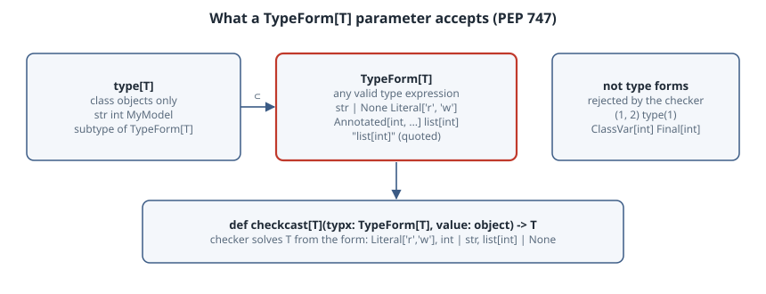

TypeForm: Typing Functions That Take Types as Values (PEP 747)
TypeForm: Typing Functions That Take Types as Values (PEP 747)
Thesis
Validators, converters and runtime checkers all take a type as an ordinary argument: TypeAdapter(int | str), check_type(value, list[int]), structure(data, Literal["r", "w"]). Until Python 3.15 there was no honest annotation for that parameter. type[T] only admits class objects, so int | None and Literal["r"] are rejected. object admits everything and throws away the T, so the return type comes back as Any or Unknown. PEP 747 adds typing.TypeForm[T], which is the type of the runtime value of any valid type expression that spells a type assignable to T. The checker can now solve T from the form you pass, and the runtime function receives exactly the object it always did. This chapter builds a small runtime checker on top of it and runs mypy and pyright against both the happy path and the cases the PEP says must be rejected.
Mental model

T lets the checker solve T from whatever form is passed.">There are three rules to keep in mind:
- What is a type form? It is whatever a valid type expression evaluates to at runtime: a class, a
types.UnionType, atyping._LiteralGenericAlias, aGenericAlias,None, or even a string such as"set[str]".TypeForm[T]is the set of such objects whose type is assignable toT. SoTypeForm[str | None]acceptsstr,None,Optional[str]and"str | None", but notstr | intand notlist[str | None]. - The parameter is covariant, and
type[T]is a subtype.TypeForm[int]is assignable toTypeForm[int | str]. Every existingtype[C]value is already aTypeForm[C], so widening a parameter fromtype[T]toTypeForm[T]breaks no callers. - It is a checker-side promise. The checker validates the expression with the same grammar it uses for annotations, so a call like
type(1), a tuple or a qualifier such asClassVar[int]is rejected. At runtime nothing changes.TypeForm(x)simply returnsx, and your function still has to interpret the object withget_originandget_args.
TypeForm without arguments means TypeForm[Any]. TypeForm[object] is “any valid type form at all”. Introspection helpers like typing.get_origin keep their object parameter, because they also accept annotation expressions (ClassVar[int], Final) that are not type expressions.
Worked example
The lab ran on CPython 3.15.0 with mypy 2.4.1 (where TypeForm is listed under COMPLETE_FEATURES, so no flag is needed), pyright 1.1.414 and pydantic 2.14.2.
A runtime checker with an honest signature
is_assignable returns TypeIs[T], so a successful check narrows the argument to the type the form spells. checkcast returns T or raises. The body is ordinary runtime introspection. Only the two signatures depend on PEP 747.
"""A tiny runtime checker whose signature finally says what it does: PEP 747 TypeForm (Python 3.15)."""
import types
from typing import Annotated, Any, Literal, TypeForm, TypeIs, Union, get_args, get_origin
def is_assignable[T](value: object, typx: TypeForm[T]) -> TypeIs[T]:
"""Does `value` inhabit the type that `typx` spells? Handles the common forms."""
if isinstance(typx, str): # "list[int]": a quoted type expression
typx = eval(typx, vars(__import__("typing")) | vars(__import__("builtins")))
if typx is Any or typx is object: return True
if typx is None or typx is type(None): return value is None
origin, args = get_origin(typx), get_args(typx)
if origin is Annotated: return is_assignable(value, args[0])
if origin in (Union, types.UnionType): return any(is_assignable(value, a) for a in args)
if origin is Literal: return any(value == a and type(value) is type(a) for a in args)
if origin is list: return isinstance(value, list) and all(is_assignable(v, args[0]) for v in value)
if origin is dict:
return isinstance(value, dict) and all(is_assignable(k, args[0]) and is_assignable(v, args[1]) for k, v in value.items())
if origin is tuple:
if len(args) == 2 and args[1] is Ellipsis:
return isinstance(value, tuple) and all(is_assignable(v, args[0]) for v in value)
return isinstance(value, tuple) and len(value) == len(args) and all(map(is_assignable, value, args))
if isinstance(typx, type): return isinstance(value, typx) and not (typx is int and isinstance(value, bool))
raise TypeError(f"unsupported type form: {typx!r}")
def checkcast[T](typx: TypeForm[T], value: object) -> T:
if is_assignable(value, typx): return value
raise TypeError(f"{value!r} is not assignable to {typx!r}")Using it: what the checkers infer
from typing import Annotated, Literal, TypeForm, reveal_type
from pydantic import TypeAdapter
from typeforms import checkcast, is_assignable
def handle(raw: object) -> None:
if is_assignable(raw, list[int] | None): # TypeIs narrows to the type the form spells
reveal_type(raw)
mode = checkcast(Literal["r", "w"], "r")
reveal_type(mode)
port = checkcast(Annotated[int, "1-65535"], 8080)
reveal_type(port)
handle([1, 2, 3])
# Explicit evaluation: TypeForm(...) returns its argument unchanged at runtime, but the checker validates it.
spec = TypeForm(dict[str, tuple[int, ...]])
reveal_type(spec)
print(spec, is_assignable({"a": (1, 2)}, spec), is_assignable({"a": [1, 2]}, spec))
# Pydantic 2.14 annotates TypeAdapter.__init__ with TypeForm[T], so the validated result is typed.
ta = TypeAdapter(int | str)
reveal_type(ta.validate_python("7"))
for v in [[1, 2], None, [1, "x"], True, (1,)]:
print(f"{v!r:10} list[int] | None -> {is_assignable(v, list[int] | None)}")
print(is_assignable(True, int), is_assignable(1, Literal[True]), is_assignable("w", "Literal['r', 'w']"))Running it under CPython 3.15 (reveal_type prints the runtime type to stderr, and here that is a plain list, str and GenericAlias):
$ python3.15 demo.py
Runtime type is 'list'
Runtime type is 'str'
Runtime type is 'int'
Runtime type is 'GenericAlias'
Runtime type is 'str'
dict[str, tuple[int, ...]] True False
[1, 2] list[int] | None -> True
None list[int] | None -> True
[1, 'x'] list[int] | None -> False
True list[int] | None -> False
(1,) list[int] | None -> False
False False Truemypy, on the same file plus the error file below (--strict):
$ mypy --python-version 3.15 --strict demo.py errors.py typeforms.py
demo.py:7: note: Revealed type is "list[int] | None"
demo.py:9: note: Revealed type is "Literal['r'] | Literal['w']"
demo.py:11: note: Revealed type is "int"
demo.py:17: note: Revealed type is "TypeForm[dict[str, tuple[int, ...]]]"
demo.py:22: note: Revealed type is "int | str"
errors.py:7: error: Argument 1 to "trycast_old" has incompatible type "UnionType | type[str]"; expected "type[str]" [arg-type]
errors.py:8: error: Argument 1 to "trycast_old" has incompatible type "<typing special form>"; expected "type[Never]" [arg-type]
errors.py:11: error: Incompatible types in assignment (expression has type "TypeForm[str | int]", variable has type "TypeForm[str | None]") [assignment]
errors.py:12: error: Incompatible types in assignment (expression has type "tuple[int, int]", variable has type "TypeForm[object]") [assignment]
errors.py:14: error: TypeForm argument is not a type [misc]
errors.py:15: error: Incompatible types in assignment (expression has type "str", variable has type "int") [assignment]
Found 6 errors in 1 file (checked 3 source files)pyright (absolute paths trimmed; --pythonpath points at the venv so pydantic resolves):
$ pyright --pythonpath venv/bin/python --pythonversion 3.15 demo.py errors.py typeforms.py
demo.py
demo.py:7:21 - information: Type of "raw" is "list[int] | None"
demo.py:9:17 - information: Type of "mode" is "Literal['r', 'w']"
demo.py:11:17 - information: Type of "port" is "int"
demo.py:17:13 - information: Type of "spec" is "TypeForm[dict[str, tuple[int, ...]]]"
demo.py:22:13 - information: Type of "ta.validate_python("7")" is "int | str"
errors.py
errors.py:7:13 - error: Argument of type "UnionType" cannot be assigned to parameter "typx" of type "type[T@trycast_old]" in function "trycast_old"
Type "UnionType" is not assignable to type "type[T@trycast_old]" (reportArgumentType)
errors.py:8:13 - error: Argument of type "type[Literal['hi']]" cannot be assigned to parameter "typx" of type "type[T@trycast_old]" in function "trycast_old" (reportArgumentType)
errors.py:11:30 - error: Type "UnionType" is not assignable to declared type "TypeForm[str | None]"
"UnionType" is not assignable to "TypeForm[str | None]" (reportAssignmentType)
errors.py:12:26 - error: Type "tuple[Literal[1], Literal[2]]" is not assignable to declared type "TypeForm[object]"
"tuple[Literal[1], Literal[2]]" is not assignable to "TypeForm[object]" (reportAssignmentType)
errors.py:13:26 - error: "ClassVar" is not allowed in this context (reportInvalidTypeForm)
errors.py:14:17 - error: type() call should not be used in type expression
Use type[T] instead (reportInvalidTypeForm)
errors.py:14:17 - error: Call expression not allowed in type expression (reportInvalidTypeForm)
errors.py:15:10 - error: Type "str" is not assignable to declared type "int"
"str" is not assignable to "int" (reportAssignmentType)
8 errors, 0 warnings, 5 informationsThe cases that must fail
from typing import ClassVar, Literal, TypeForm
from typeforms import checkcast
def trycast_old[T](typx: type[T], value: object) -> T | None: ...
trycast_old(str, "hi") # fine: a class is a type[T]
trycast_old(str | None, "hi") # rejected: a union is not a class
trycast_old(Literal["hi"], "hi") # rejected: Literal is not a class
ok: TypeForm[str | None] = str # str is assignable to str | None
bad1: TypeForm[str | None] = str | int # int is not
bad2: TypeForm[object] = (1, 2) # a tuple expression is not a type expression
bad3: TypeForm[object] = ClassVar[int] # qualifiers are not types
bad4 = TypeForm(type(1)) # calls are not allowed in type expressions
n: int = checkcast(str, "x") # the form says str, so the result is strReading it
- Inference flows from the form. Both checkers solve
T = list[int] | Nonefrom the union,Literal['r', 'w']from the literal, andintfromAnnotated[int, "1-65535"], because metadata is ignored, as the PEP permits. mypy prints the literal asLiteral['r'] | Literal['w']and pyright prints it asLiteral['r', 'w']. They are the same type. - Pydantic gets it for free.
TypeAdapter.__init__is now annotatedtype: TypeForm[T], sota.validate_python("7")isint | strin both checkers. This is the change the pydantic 2.14 release notes call out: on 2.13 the result wasUnknown. One caveat is that when pyright could not import pydantic (an earlier run without--pythonpath), the result silently fell back toUnknown. Always check that the library actually resolves. type[T]really is too narrow. On lines 7 and 8 both checkers rejectstr | NoneandLiteral["hi"]for the oldtype[T]signature. That is the exact motivating example of the PEP.- Assignability is about the spelled type.
TypeForm[str | None] = stris accepted, becausestris assignable tostr | None.= str | intis rejected (line 11). Line 15 shows the payoff of a generic signature:checkcast(str, ...)returnsstr, so assigning it tointis an error. - The checkers do not agree on everything yet. pyright rejects
ClassVar[int]as a type form (line 13,reportInvalidTypeForm). mypy 2.4.1 says nothing about it, even though the PEP listsClassVar[int]among its invalid examples. Both rejectTypeForm(type(1)). pyright emits two diagnostics (atype()call and “Call expression not allowed in type expression”), mypy says “TypeForm argument is not a type”. If your library depends on rejection, test it under every checker your users run. - The runtime is the same as before.
TypeForm(dict[str, tuple[int, ...]])printeddict[str, tuple[int, ...]], the very object passed in. The runtime column also shows the bugs aTypeFormsignature does not catch.Trueis aninttoisinstance, which is why the lab excludesboolexplicitly.Literal[True]must not match1, which is why it comparestype(value) is type(a). Your interpreter of type forms still needs its own tests.
Pitfalls
- Do not annotate introspection helpers with
TypeForm. If the function must acceptClassVar[int],Final,Required[...]orInitVar, those are annotation expressions, not type expressions. Keepobjectthere, astyping.get_argsdoes. - Strings are type forms, but you have to evaluate them.
"list[int]"is a validTypeForm[list[int]]to the checker, but at runtime it is just astr. The labevals it in atyping+builtinsnamespace. Real libraries resolve it in the caller’s module namespace, which is the hard part (seetyping.evaluate_forward_ref/annotationlibin 3.15). Neverevaluntrusted input. TypeFormis nottype. You cannot calltypx()or useisinstance(x, typx)on aTypeForm[T], because a union or literal is not a class. The checker treats it as having onlyobject’s attributes. Branch onget_originfirst and only callisinstanceonce you know it is atype.- Older Pythons.
typing.TypeFormis new in 3.15. For 3.10–3.14 import it fromtyping_extensions, which is what pydantic does, and pin a checker new enough to understand it. The pydantic notes say pyright 1.1.412 and mypy 2.2 or later. - Bare
TypeFormunder--strict. mypy reportsMissing type arguments for generic type "TypeForm". WriteTypeForm[object]when you mean “any type form”.
Try this
- Add
TypedDictsupport tois_assignable(usetyping.is_typeddictand__required_keys__). Check thatreveal_typeafter a successful check shows yourTypedDictin both checkers. - Write
class Field[T]: def __init__(self, typx: TypeForm[T], default: T) -> None. Confirm thatField(int | None, "x")is rejected andField(int | None, None)is accepted. - Change
checkcast’s parameter back totype[T]and record every line ofdemo.pythat each checker now flags. - Make the lab fail on
ClassVar[int]at runtime as well, by rejectingget_origin(typx) is ClassVar. Then decide whether a runtime check should be stricter than mypy.
Sources
- PEP 747 – Annotating Type Forms (Final, Python 3.15): https://peps.python.org/pep-0747/. Source text: https://github.com/python/peps/blob/main/peps/pep-0747.rst
- Typing spec, type expressions grammar: https://typing.python.org/en/latest/spec/annotations.html
typing.TypeFormreference: https://docs.python.org/3.15/library/typing.html#typing.TypeForm- Pydantic v2.14 release notes, “Support for TypeForm”: https://pydantic.dev/articles/pydantic-v2-14-release
- mypy documentation: https://mypy.readthedocs.io/en/stable/. pyright configuration (
reportInvalidTypeForm): https://github.com/microsoft/pyright/blob/main/docs/configuration.md